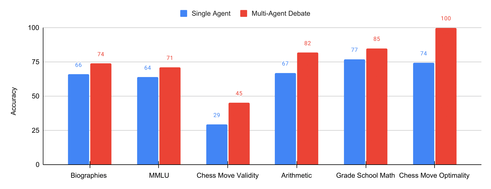
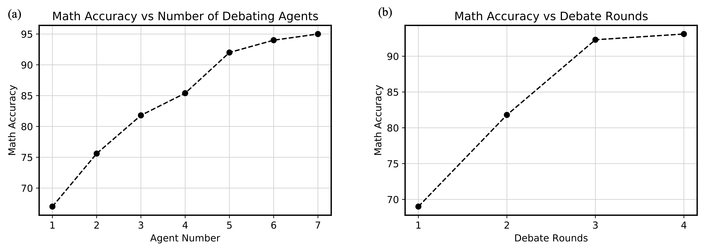
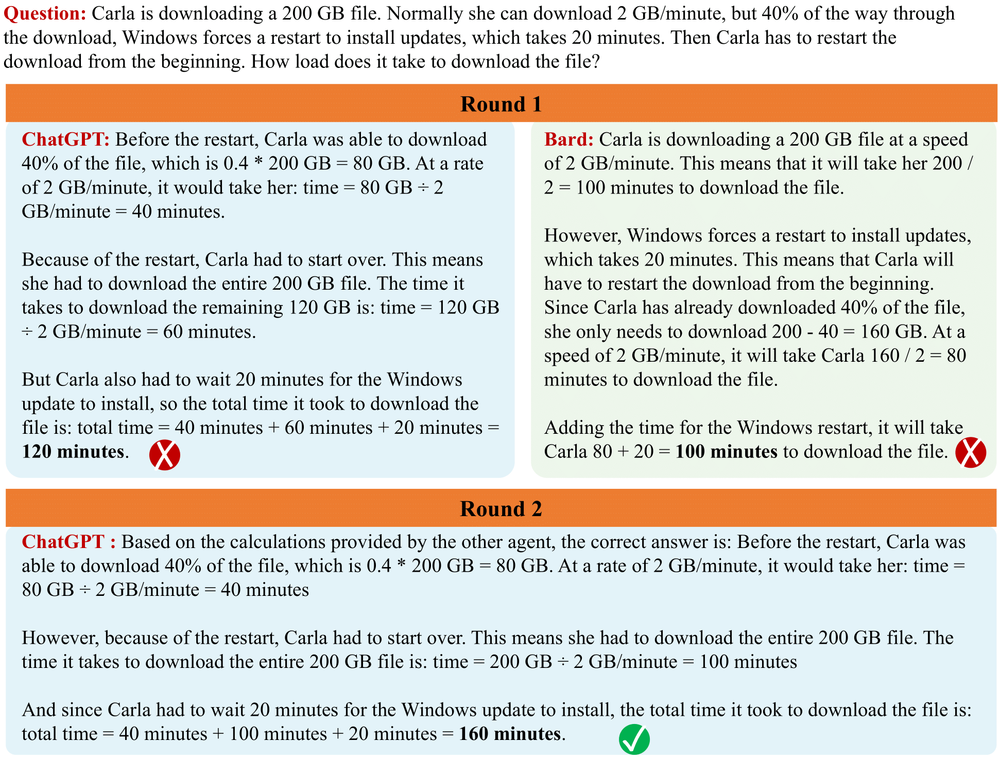

Paper

Large language models (LLMs) have recently shown remarkable progress in language generation, understanding, and few-shot learning. At the same time, a growing body of work has explored how prompting strategies such as verification, self-consistency, and scratchpads can further improve their performance. In this paper, we present a complementary approach in which multiple instances of a language model propose answers, critique one another, and debate over several rounds before reaching a final answer. We show that this procedure substantially improves mathematical and strategic reasoning across a range of tasks. It also improves factual accuracy, reducing the fallacies and hallucinations that contemporary models often produce. Our method can be applied directly to existing black-box models and uses the same overall procedure and prompts across all of the tasks we study. Overall, our findings suggest that a "society of minds" approach can significantly strengthen language models and offers a promising direction for further advances in language generation and reasoning.
Most approaches for improving language models focus on making a single generator perform better. In contrast, we treat multiple instances of the same language model as a multiagent society, in which different agents propose answers and critique the answers proposed by others. The final answer produced by this debate procedure is both more factually accurate and more effective on reasoning tasks. Below, we compare multiagent debate with standard single-agent generation across several benchmarks covering reasoning and factuality.

Multiagent Debate Improves Reasoning and Factual Accuracy. Accuracy of traditional inference and our multi-agent debate over six benchmarks (chess move optimality reported as a normalized score)
In the main experiments, we use three language-model agents that debate for two rounds, largely for computational reasons. However, the performance of multiagent debate can improve further when we increase either the number of agents or the number of debate rounds. Below, we show arithmetic accuracy as each of these factors is varied.

(a) Performance with Increased Agents. Arithmetic performance improves as the number of underlying agents involved in debate increases. (b) Performance with Increased Rounds. Arithmetic performance improves as the number of rounds of underlying debate increases.
Although we mainly study debate among multiple instances of the same language model, the same procedure can also be used to combine different language models. This lets the strengths of one model compensate for the weaknesses of another. Below, we show how a combination of ChatGPT and Bard can work together to solve a difficult grade-school math problem.

Debate Between ChatGPT and Bard. Illustration of debate between different models. While both models generate incorrect responses to the initial GSM8K problem, debate between the models enables them to generate the correct final answer.
Multiagent debate motivated a broader line of work on scaling intelligence through multiagent computation. Our subsequent papers explore how agents can learn complementary roles, verify candidate solutions, and coordinate their computation more effectively. For a broader perspective connecting these ideas, see Generalization by Construction.

@article{du2023improving,
title={Improving factuality and reasoning in language models through multiagent debate},
author={Du, Yilun and Li, Shuang and Torralba, Antonio and Tenenbaum, Joshua B and Mordatch, Igor},
journal={arXiv preprint arXiv:2305.14325},
year={2023}
}